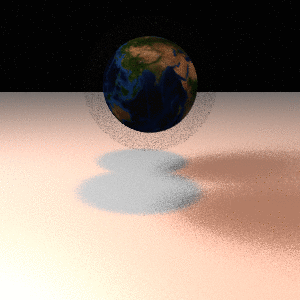

CS488 Project: Advanced Ray Tracer
By Michael Shimokura
Objective 1: Extra Primitives
For my extra primitives I implemented Cones, Cylinders and Thin Lenses (Circles)
Objective 2: Texture Mapping
You can associate a gr.texture with a gr.material.
The texture will be treated as part of the diffuse color of that object.
Objective 3: Refraction
In the first image, the lens from Objective 1 is now transparent.
It is a converging lens, so the texture on the wall is enlarged.
The second image is a demonstration of total internal reflection.
The refractive index of the right mirror is iteratively lowered,
eventually turning it into a perfect mirror.
Objective 4: Anti-Aliasing
I implemented anti-aliasing using jittering.
The effects are subtle, but can be seen below.
Objective 5: Soft Shadows
To render penumbras, I modified Lights to have a radius.
Each shadow ray is cast towards a random point on the light.
Anti-aliasing combines with the random direction to produce an average of the
light intensity at that point.

Objective 6: Glossy Reflection and Refraction
Diffuse surfaces will not produce sharp reflections, because each incoming light
ray will be reflected at a different angle.
These images show glossy reflection and refraction.
Note: I used a uniform distribution to peturb the rays.

Objective 7: Depth of Field
Regular cameras have a finite aperture and focal length, as opposed to the pinhole camera
model we have been using thus far.
These qualities make rays from the same point on an object intersect with the film of a camera
at different points depending on how far away it is.
This causes some objects to be out of focus, as demonstrated below.

Objective 8: Caustics
I implemented caustics using bi-directional ray tracing and illumination maps.
Each diffuse object in the scene has a special texture allocated for it which stores
indirect lighting for that object.
Objective 9: Final Scene
Objective 10: Animation
Final Final Scene
Extras

Bloopers